Ilustração da lei das áreas
Kepler foi um importante astrônomo, e suas obras foram fundamentais para o desenvolvimento da astronomia como a conhecemos. Ele herdou os registros de Tycho Brahe e com eles, pode realizar trabalhos que ajudaram muito no entendimento do Universo, na época em que foram feitos. Ele teve muitas contribuições, mas as que mais chamaram atenção são as três leis que serão citadas aqui, que o ajudaram a fazer várias outras previsões, depois.
Lei das órbitas elípticas
Kepler foi capaz de deduzir esta lei a partir do cálculo, usando como base as observações de Tycho Brahe, a órbita da Terra, e posteriormente, de Marte. A primeira Lei de Kepler, ou a lei das órbitas elípticas, diz que as órbitas de todos os planetas não são circulares, e sim, elípticas, com o Sol em um dos focos. Essas elipses não são tão excêntricas, e por isso, se assemelham muito a círculos. Alguns astrônomos antes de Kepler já haviam previsto isso, como Aryabhata, em Aryabhatiya, porém nada podia ser confirmado com precisão, assim como com Johannes Kepler.
Lei das áreas
A segunda Lei de Kepler, ou Lei das áreas, representada na imagem acima, se trata de uma lei que prevê que a velocidade com que um planeta percorre a sua órbita, varia de acordo com a distância entre o planeta e o Sol. Sendo assim, essa Lei diz que a área varrida pelo planeta, em um determinado tempo, é igual a outra área varrida por ele, no mesmo intervalo de tempo. Então, dessa Lei, é possível entender que quando o planeta está perto do Sol, em sua órbita, ele se move mais rapidamente, e quando está longe dele, se move mais lentamente. Porém, como as órbitas são elipses com uma excentricidade pequena, a diferença entre essas velocidades não é muito grande.
Lei harmônica
A terceira Lei de Kepler, ou Lei harmônica, diz que o quadrado dos períodos siderais (o tempo para completar a órbita) dos planetas, são diretamente proporcionais ao cubo do semi-eixo maior da órbita (a maior distância entre o Sol e o planeta). A fórmula pode ser descrita desta forma, com p sendo o período sideral, a sendo o semi-eixo maior da órbita e K sendo uma constante:

A partir desta equação, é possível ver que quanto mais distante do Sol, o planeta estiver, mais lenta será sua órbita. Isso era algo que já havia sido observado e constatado, mas apenas Kepler conseguiu deduzir uma fórmula que descrevia exatamente essa relação.
Bibliografia
http://astro.if.ufrgs.br/
http://astro.if.ufrgs.br/Orbit/orbits.htm
https://www.iag.usp.br/
https://www.ufsm.br/